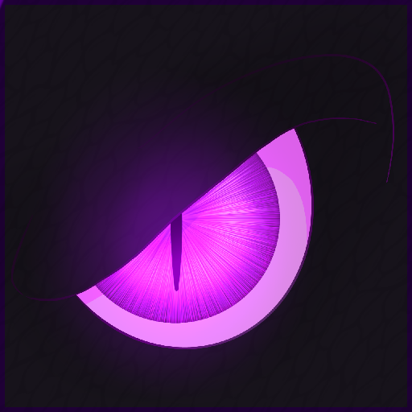

Skip to content

Dragon Mounts 2
Search
/
Explore the wiki
Start here
Overview
Install
Dragon guide
Dragons
Eggs and taming
Riding and flight
Reference
Items and equipment
Changelog
FAQ and glossary
Page not found
This address does not match a page in the guide.
Home
Browse dragons
Arrow keys to move, Enter to open, Esc to close